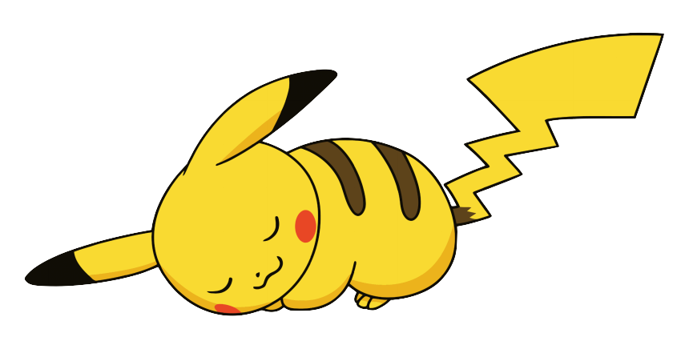
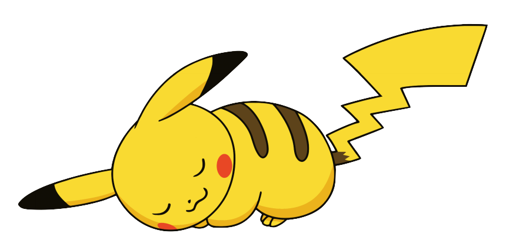

Biology
 

Pikachu is a short, chubby rodent Pokémon. It is covered in yellow fur with two horizontal brown stripes on its back. It has a small mouth, long, pointed ears with black tips, brown eyes, and the two red circles on its cheeks contain pouches for electricity storage. It has short forearms with five fingers on each paw, and its feet each have three toes. At the base of its lightning bolt-shaped tail is a patch of brown fur. A female will have a V-shaped notch at the end of its tail, which looks like the top of a heart. It is classified as quadruped, but it has been known to stand and walk on its hind legs.
The anime has shown that wild Pikachu live in groups in forested areas. Pikachu communicates amongst themselves using squeaks and tail-shaking as friendly gestures. Electricity can be used to receive and send messages with each other, as well as other Electric Pokémon species. It raises its tail to check its surroundings and is occasionally struck by lightning in this position. When groups grow, they can inadvertently cause lightning storms. Pikachu is found foraging for berries it roasts with electricity to make them tender enough to eat. A sure sign that Pikachu inhabits a location is patches of burnt grass. It has been observed eating and sometimes destroying telephone poles, wires, and other electronic equipment.